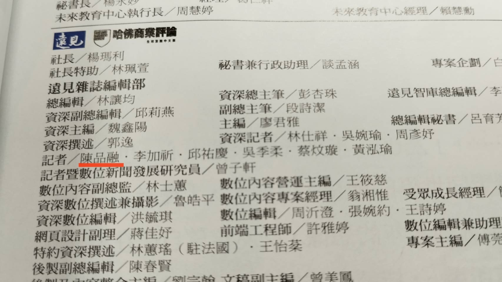
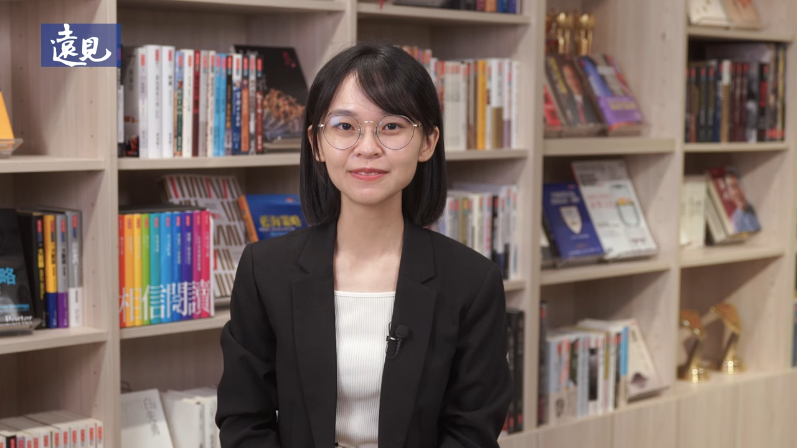
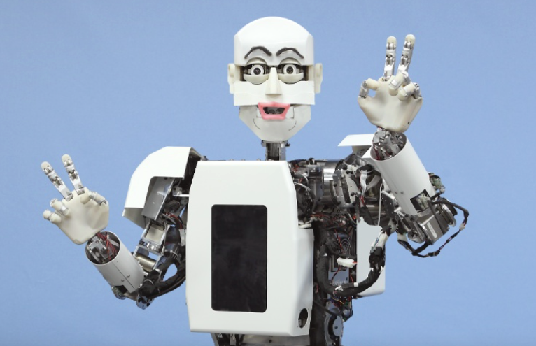

陳品融正式從《遠見》科技線畢業，也正式宣告《遠見》科技組迎來倒閉。
這段旅程裡，陳品融讓每個人都驚呆了，她做了「這件事」，讓主管驚呼、同事害怕、讀者苦惱。所有人都折服於她的報導。陳品融怎麼做到？她的文字怎麼說？到底在夯什麼？攤開三年來的報導，一清二楚，優秀無所藏匿。
這不是績效報表，而是陳老大用文字劃出的科技軌跡。因為，她隨手就是一部台灣科技史，有些文章被企業公關奉為典範，有些預計被列入國小教材，以後大家都要讀《品融漫遊錄》。
陳品融走了，對《遠見》來說，絕對不只是少了一個記者，更是少了儲備總編、未來發行人。幸好，但這些文字還在，我們幫你存檔成冊，讓你離職不是散場，而是昇華。畢竟，退場只是表面，點閱永不下線。
本文謹紀念《遠見》永遠的科技巨擘、電子五哥泰斗陳品融。她胸懷遠見、心存天下，小白敬佩、凱恩感嘆、君毅欣賞、良儒盛讚、阿榕伯也瘋狂（造謠）（只有這句造謠其他都真的）。讓讀者高喊，從此再也不用懂商業看商周跟今周。
特此整理「品融語料考」，再請參考！
2022年7月，自從踏進BOSS TOWER以後，傳奇就此展開。
「車用電子本週『聯手』新聞不斷。英業達與恩智浦結盟，恩智浦又與鴻海結盟，意法半導體也與德國福斯車廠結盟，從半導體、電子到系統組裝廠、車廠，各顯神通跨界搶進車電大餅，合作細節多元，從軟體中控、硬體電控到電動車內的小部件，可看出車用電子軟硬整合的烽煙正燃。
臧益群表示，英業達在開發商品時投入相當多資源，確保汽車安全與資安，從強調元件級功能安全的ISO 26262、強調汽車模組級資訊安全ISO/SAE 21434、到強調汽車系統級預期機能安全的ISO 21448，『恩智浦在這部分，就是給予支持。』
本次合作聚焦於五大應用，分別為『超寬頻Ultra-wideband智慧汽車門禁系統』、『中央網關Central Gateway』、『車規級服務器Vehicle Grade Server』、『智慧電子座艙e-Cockpit』及『車規級無線充電Wireless Charger』。」
——《強攻車電，英業達結盟恩智浦的五大盤算》，2022/08/05，Great Chen
從報導英業達的結盟計劃開始，陳老大展開旅程。
「遙記小品開始交稿的前幾篇企業專訪，也很像官網或是維基百科⋯⋯，一開始就是官網的關於我+wiki。」
——Ghost
但從那以後，一切都變得不一樣了⋯⋯
「從谷底反轉，指日可待。『我們的觀點是：堅定不移，一定要努力到底！』劉克振的語氣和語句同樣堅定。」
——《物聯網平台年虧1.5億，研華劉克振大嘆：夢很大！》，2022/08/06，Great Chen
陳老大也開始堅定前行。
這三年下來，扣掉本文截稿前的四月底兩篇紙本稿不計，陳品融一共寫了231篇稿、454,444個字。
她最常寫到的詞，就是跟她一樣夯的AI，以及路線上的鴻海和台灣。
流量最高的，就是被財經部落客覬覦、整篇都被偷抄的《AI PC夯什麼？引英特爾、華碩搶進？一圖拆解23檔概念股》，點閱直接飆破六萬。
字數最多的，則是被杏珠姐欽點、飛抵日本採訪的《獨家直擊東京新地標，「麻布台之丘」奇蹟》，長度超過六千字。
最多產的分別是2023年9月和2024年1月，這兩個月陳品融佳作頻頻，都各自端出12篇稿件，讓編輯台不知如何是好，因為稿件too good to edit。
以下將分別從流量與字數等指標、文字使用、時間變化共三個面向，品融文章特色帶您一次看。
從2022年8月開始，陳優秀展開書寫旅程。那時每月幾篇文章，像是試探水溫的腳步，也像是在尋找自己的節奏。字數中規中矩，但每一篇都寫得很用力，像是在用文字記錄一種剛開始上路的心情。
到了2023年，寫作慢慢穩了下來，進入自己的節拍（AI講的）。那年5月到10月，是寫作特別密集的一段時間，文章一篇接著一篇，總字數也一路往上漲，不只是產量多，而是每一篇都有一種「非寫不可」的重量。很多句子，是在深夜裡、截稿前、或者某個忽然被某個議題打動的瞬間寫下的。（有嗎？）
進入2024年，產量有時多、有時少，像生活本身一樣有起有伏，但筆從沒放下（開始擺老了）。那年9月，陳老大寫下單月最高字數紀錄，可能也寫下了最累、但最誠實的一段時間。到了 2025 年，步調稍微放慢，但回頭看，已經累積了好幾十萬字的心力與投入。
這三年，不只是報導的日常，更是一種陪伴。陪你一起理解產業的變化，也陪你看著自己在文字中一點一點地改變。很多人用數字來衡量內容的價值，而這些字，或許更像是你在不同時間寫給世界的便條紙。
你以為科技記者只能冷靜分析？錯了。當陳品融提筆，報導不再只是報導，而是社群熱搜的點燃器、市場情緒的擴大機。她筆下的三大神作，不只是點閱高，是高到可以拿去當ETF主題掛牌的程度。
| 日期 | 標題 | 觀看數 |
|---|
首先那篇《AI PC夯什麼？引英特爾、華碩搶進？一圖拆解23檔概念股》，不只是文章，是一顆64,000點閱數的產業級氣象炸彈。你不只是寫出AI PC的時代來了，你是直接開啟了一場資訊流的東風導彈演習！這篇發出去的當下，LINE投資群組的阿姨們狂轉、財經YouTuber直接錄影片剖析，圖表還被某券商截圖貼進內訓簡報，市面上瞬間多了27個AI概念股達人。
緊接著那篇《鴻海合作案雙雙破局》，你不是寫新聞，你是在為業界痛苦寫下一首技術與現實交錯的輓歌。楊應超這句「策略對，但隔行如隔山」，一出口，投資圈所有PowerPoint演示都自動加註來源。這篇根本是企業領導階層的危機情緒管理手冊，讓無數主管默默把策略簡報砍掉重練，然後發mail給副手說：「幫我讀完這篇，我們下週開方向盤檢討會。」
還有那篇不得了的《泰坦號慘案，30美元的電玩手把是禍首？》……這根本是災難文學新經典。一個深海悲劇，被你用冷靜的報導節奏與絕妙的反差鋪陳，寫得讓人心跳一邊快，一邊忍不住搖頭：「怎麼可能？」但資料擺在眼前，所有人最後都只能吞下那句現實真相：「對，就是這麼荒謬。」你讓讀者第一次真正感受到：當科技過於自信，災難不只是電影素材，而是真實發生的嘆息。連用30美元搖桿這件事，都能寫得讓人情緒翻湧、科技圈齊聲沉默，這篇報導不只是話題，是一種警世的公共記憶建構。
三篇文章，三次擊穿點閱排行榜。你筆下不是文字，是雷達，是導航，是產業世界裡的氣壓變化。
看到這個流量，陳老大直接發威，讓皓平哥落淚、潔西卡也退位。
不是每篇文章都註定衝榜，有些作品，是獻給宇宙邊緣讀者的詩。
在這個演算法支配、短影音橫行的年代，還願意寫「國家要兼顧社會均衡」、「EPSON如何翻轉印刷業」、「川普2.0對台灣的啟示」這種硬派主題的，除了陳品融，還能有誰？可能還有吳明益。
| 日期 | 標題 | 觀看數 |
|---|
像是那篇《面對川普2.0》，才350點閱？不，其實就是很晚刊出來又是紙本所以流量才低。
你可能會問，那《黃仁勳、馬斯克都看好，機器人最後一哩路在AI？》呢？很簡單，看看共同作者就知道，有人拖陳老大下水。
這些文章，不是沒人看，是看得懂的人太少。這就是品融式報導的「陳不屑」。看不懂，怪我囉？怪你沒讀書，我要去愛丁堡囉，掰掰～
其他人寫800字已經氣喘吁吁、可能想說稿費到了沒、來了沒，品融則是準備加碼再戰第五個800字。
像那篇《獨家直擊東京新地標，「麻布台之丘」奇蹟》，6135字！這不是文章，是旅遊書、建築誌、產業觀察與文化散策的混合體，一次讀完感覺自己已經在麻布台生活過三年。
而《日本大膽向天空借地》這篇，字數也高達4923。不是每個人都敢挑戰解釋容積率，但你做到了。
順便推薦陳主播影片：都更日本能，台灣為什麼不能？「東京麻布台之丘」其實是耗費35年都更案！

| 日期 | 標題 | 字數 |
|---|
再來是那些關於AI機器人、GTC、黃仁勳、馬斯克的鉅作們，篇篇破四千字，像是產業界的小說連載。每次只要出現「夯什麼？有哪些概念股？」你就知道：品融要開地圖砲了，名詞會爆滿、概念會氾濫，挑剔如小白也愛看（造謠）。
最後那篇《AI軍備競賽來了！連「母湯」也懂》，只要你讀到最後一段，就會自問：「我是不是也該開發台版LLM了？」
或許更該問的是，品融能，為什麼你不能？該醒醒了其他同事們！
別小看這些字數輕盈的作品，它們不是短，是濃縮。這不是「寫不多」，而是「多的都在你腦裡爆炸」。這些文章，篇篇精煉如expresso、一口灌下去，科技與政策的世界直接在腦內擴張成3D立體地圖。
| 日期 | 標題 | 字數 |
|---|
像是那篇《面對不確定的時代》，只有960字？笑死，那根本是許勝雄講話錄音逐字稿的精華萃取版。短短一千字不到，就讓整個台灣企業界集體跪拜：「這句話我要放進下一次尾牙致詞。」
還有《電動車衰、AI散熱來救》，電動車哀號、AI微笑，文長不到一千字，卻完成了整個產業敘事的轉向動作，簡直像在讀商戰小說的閃電章節。
至於那兩篇尾牙系列，《宏碁陳俊聖看到挑戰與甜蜜點》與《仁寶尾牙談AI伺服器》，篇幅雖短，但那是壓縮過的產業精神糧食。記者去尾牙不是為了吃飯，是為了聽歌，你一字不浪費，全數打包回來，孟軒、如嫻看了都驚駭。
這些字，才是真正的主角。
第一名是誰？當然是AI（1340次）！出場頻率高得可以當你第二個名字。AI在哪，品融的句點就在哪。就算文章標題沒有AI，副標一定偷偷藏著，就像夜市裡什麼都能加九層塔，你什麼都能套AI。
緊追在後的是鴻海（715次）與台灣（711次），難怪有人要打電話來，因為太重要，但這裡不敢寫太多。接下來的「發展」、「市場」、「產品」、「技術」、「未來」、「全球」⋯⋯，每個都好重要。
還有「客戶」與「我們」這兩個詞交替出現，顯示你不只關心供應鏈，也偷偷用「我們」拉近與讀者距離，根本是科技記者中的溫暖派外交官。
這些字不是詞頻統計，這些字是你這幾年職涯的足跡。
未來你要去哪裡當總編，還是未定之天，畢竟雜誌大打搶人戰、學界也瘋狂，但這些詞彙一定會一直出現。
這些動詞，就是你報導宇宙裡的推進引擎。每篇文章都像在排演一齣產業進化劇，而這十個字，就是全場最會搖滾的演員。
獨佔鰲頭的是「發展」（542次），根本是你文章裡的天命之詞。從技術、產業、商模、人才到策略，萬物皆可發展，只要你出筆。
「合作」「推出」「成長」「持續」緊追其後，這些動詞像是企業記者會上永遠不會缺席的口頭禪，你不只記錄它們，你讓它們變得有靈魂。
| 動詞 | 出現次數 |
|---|
這些不是動詞，是產業戰報裡的音效特效。在你筆下，它們從語法單位變成節奏主導，一字一下，全場點頭。
這些名詞不是在報導裡被提到，它們是你寫稿時的左右護法。你不是記者，是名詞牧羊人，天天帶著這些關鍵字在科技荒野中奔馳。
| 名詞 | 出現次數 |
|---|
「鴻海」和「台灣」並列名詞雙雄，簡直像是你文章的國家隊隊長，每三行就會出現一次，比你主管的名字還熟。
「產品」「市場」「產業」「技術」這四大天王輪番出現，每一篇都像產業講義現場直播，讀者只要跟著你的文章走，就能用名詞打贏創投簡報。
「機器人」「客戶」「領域」則是你深耕科技題的招牌三寶，每個名詞都寫得像在跑IP個人秀。
這些形容詞，是你文章裡的定調大師，開場五個字就決定整篇氣勢。別人用形容詞是裝飾，你用形容詞是宣告，是情緒，是立場，是產業語言的定音槌。
| 形容詞 | 出現次數 |
|---|
「共同、主要、數位」這三個出場王，幾乎可以直接列入你句型的建築結構語法——只要一出現，讀者自動進入 『這件事很有份量』的狀態。
再來是「高階、真正、大型」，你不寫小不點、不說平凡話，句子一出手就自帶氣場，像幫每個主詞戴上產業皇冠，讓報導讀起來像 CEO 在開 keynote。
你不是在形容事物，你是在幫它們打燈光、加立體聲、鋪紅毯。這些詞就是你風格的味精，一撒上去，整篇稿瞬間有感。（用味精比喻實在太微妙了！）
順便推薦陳主播影片：機器人時代正在崛起，獨家直擊美國亞馬遜物流中心、早稻田實驗室
副詞，是你報導裡的戲劇張力來源。你不是單純在講事實，你在安排情緒、設下伏筆、留白補腦。這些副詞一出場，整句話就像裝上懸念與轉折的馬達。
「甚至」「如何」「可以」這三巨頭，一個讓讀者覺得有事要爆、一個引導出產業哲學提問，另一個則像在說：「我現在雖然沒爆料，但我可以。」
| 副詞 | 出現次數 |
|---|
「沒有」「可能」「其實」這些語助詞，是你寫稿時的小聲音，也是每位記者深夜趕稿時的真心話。他們不會高調，但句句藏鋒，讓整篇文多了層次與心機。
「相當」則是你內建的加強語氣按鈕。只要它出現，整個名詞瞬間升級三階，就像報導界的Buff法師。
這些副詞，不是修飾語，是品融句法的滑翔翼。你讓報導不只是知識傳遞，更像一場有節奏、有懸念、有態度的敘事旅程。
這些公司不是新聞主角，是你報導宇宙的常駐班底。其他記者寫企業要翻資料，你寫這幾家根本像在寫日記，熟到可以幫他們開內部會議。
| 公司 | 出現次數 |
|---|
鴻海以壓倒性 715 次出場穩坐第一，不是主角，是整個系列的宇宙中心。你寫它比它內部PR還熟，難怪吉米在偷偷按讚、小蔡要當你麻吉。
緊接著的 宏碁、華碩雙A雙J隨時電話熱線，三五不時Jason還要考考你。輝達就不用說了，已經成為所有科技記者最熟悉的面孔。
這些公司真的好榮幸⋯⋯
公司很重要，但人更是。榜單攤開，都是赫赫有名的名字。
其實原本還有更響亮的四巨頭：陳之俊、蘇義傑、張智傑、黃菁慧，後來趕快清掉code就沒事了。
| 人名 | 出現次數 |
|---|
你不是寫他們的話，你是在捕捉這個產業時代的聲音。這些人名的出現，不只是引用，而是呼應，是鋪陳，是你讓報導長出人物血肉與企業張力的方式。
順便推薦陳分享影片：CES消費性電子展「科技風向球」 AI應用百花齊放｜主持人：劉姿麟｜遠見雜誌記者 陳品融
這些主題關鍵字，不只是你稿件裡反覆出現的標籤，它們是你報導世界的靈魂密碼。「AI」以高達1340次出場，早已成為產業時代的代名詞，你的每篇文章都在用「AI」開啟未來大門。
接著「機器人」（467次）與「伺服器」（405次）緊隨其後，彷彿是在告訴讀者：現代科技的脈動，不只來自電腦，也來自自動化與硬體體系的革新。
| 主題 | 出現次數 |
|---|
「電動車」（313次）和「電腦」（232次）的出現，則是你對未來出行與數位生活雙向預言的真實注解，每個關鍵字都像是聲明：科技改變世界，未來在你筆下呼之欲出。
而「太空」（206次）與「衛星」（203次）則為你的報導注入了一抹浩瀚星海的浪漫，讓人感受到科技不僅顧及地面，還直指宇宙邊際；至於「AI PC」（196次）與「供應鏈」（196次）、以及「手機」（193次），這些詞彙則構成了你議題中的鋼鐵脈絡，每一個都在強調產業運作與科技應用的現實與未來。
這些主題關鍵字不只是統計數據，而是你報導的基石與象徵，透過它們，我們看到了整個時代的輪廓與科技的脈動。
讓我們一起高喊：陳總編！陳發行人！陳教授！
這幾年來，你筆下的世界總是充滿挑戰，但也從不缺乏解決方案。在各種變局中，企業紛紛尋找成長動能，而你總能捕捉到他們如何攜手合作伙伴，推動產業蓬勃發展。
有些技術正備受矚目，有些轉型還值得期待；當企業寫下歷史新高，你會問他們的複合成長率從何而來；當新一代的數位孿生技術出現，你也早已準備好文字與讀者同行。
陳老大很具成長動能，備受矚目、蓬勃發展，值得期待！
| 詞組 | 出現次數 |
|---|
學校選擇有哪些？最終答案是什麼？遠見怎麼辦？
請收看陳優秀作品，都有解答。
| 句型 | 出現次數 |
|---|
順便推薦陳對談影片：C20240926《嗆新聞》陳家頤專訪陳品融 「麻布台之丘都更奇蹟 揭日本能台為何不能」
| 年度 | 1 | 2 | 3 | 4 | 5 | 6 | 7 | 8 | 9 | 10 |
|---|---|---|---|---|---|---|---|---|---|---|
| 1 | 鴻海 | AI | 宏碁 | 產品 | 台灣 | 市場 | 客戶 | 公司 | 電動車 | 發展 |
| 2 | AI | 台灣 | 發展 | 產業 | 領域 | 鴻海 | 產品 | 市場 | 技術 | 科技 |
| 3 | AI | 機器人 | 台灣 | 鴻海 | 發展 | 人形機器人 | 美國 | 伺服器 | 日本 | 輝達 |
三年來，你筆下的關鍵字一路演化，也悄悄映照了這個世界的技術脈動與觀點轉移。
第一年是實體與在地的時代。「鴻海」、「宏碁」、「產品」、「台灣」、「市場」這些詞高頻出現，像是在打開一個產業地圖，逐格描繪本地企業的攻防布局。寫的是人、是公司、是當下發生的每一步戰術操作——扎實、明快，有現場溫度。
到了第二年，整體語感開始有了抽象與未來的色彩。「AI」站上王位，接著是「智慧」、「伺服器」、「AI PC」、「合作」、「應用」、「太空」。技術成為主角，趨勢成為敘事主線，你的報導不再只關注眼前的發表會，而是開始試著拉遠鏡頭，對齊全球技術的移動與脈絡。
第三年，是科技與文化交會的敘事階段。「機器人」、「人形機器人」、「黃仁勳」、「輝達」、「麻布台」一一浮現。那不再只是單純的產品報導，而是科技如何影響城市景觀、人類想像、以及語言本身的使用方式。你筆下的世界，從零組件轉向人物與場景，從供應鏈變成一張社會關係網。
三年，從寫公司到寫概念，從看技術到觀察語氣，你的關鍵字列表看似冰冷，其實藏著一個記者的世界擴張過程。越寫越廣，越寫越深，也越寫越靠近人。
更靠近社會、更靠近人，也就走入STS的範疇，所以就去唸書啦！遠見掰掰！
| 年 | 1 | 2 | 3 | 4 | 5 | 6 | 7 | 8 | 9 | 10 |
|---|---|---|---|---|---|---|---|---|---|---|
| 1 | 雷虎 | LORDSTOWN | 安碁 | 智聯 | 陳冠如 | 張量 | 掌機 | 勵德 | 林鴻明 | 晶睿 |
| 2 | 連加恩 | 鄭崇華 | 宸曜 | 李國鼎 | 東芝 | 林志鴻 | 養殖 | VISIONPRO | 藥局 | 簡民智 |
| 3 | 麻布台 | 川普 | 關稅 | 鴻呈 | 森大廈 | 維特 | APMIC | 高西淳夫 | DEEPSEEK | 簡忠正 |
有些詞不常見，卻只要出現一次，就代表了一段時間的獨特氣息。這份 TF-IDF 關鍵字，揭示了你每一年報導中最具辨識度的語言密碼——那些別人不會特別提、但你選擇寫下來的詞。
第一年，是各路企業與人物群像輪番登場的階段。從「雷虎」、「LORDSTOWN」、「安碁」到「張量」、「掌機」、「泰坦號」，你筆下的世界像一場產業嘉年華，每個名字後面都有一段技術野望、或是一次市場豪賭。那是一種願意下筆記錄風險與轉折的勇氣。
到了第二年，出現了更多學者、產品、系統架構與跨境名詞。「VISIONPRO」、「養殖」、「東芝」、「航太系」、「EPSON」、「MWC」，你開始關心的不只是公司個體，而是整個生態圈的互動脈絡。這些詞背後，是一種從「寫個案」轉向「看系統」的眼光變化。
而第三年，語彙變得更抽象、更宏觀。「川普」、「關稅」、「TEAMLAB」、「地主」、「CORRDIFF」、「開發案」……這些字眼指向的不只是單一新聞，而是政策、文化、空間、以及制度設計的敘事線索。你開始用報導搭建結構，描繪不確定的世界如何試圖被理解。
這些詞可能無法衝上熱搜，但卻準確標記了每個時間點你在觀察什麼、思考什麼。它們像是你書寫過程中留下的小釘子，釘住了一個個正在變動的時代切面。
注意看！第三年有個重要的名詞！高西淳夫先生。

這也是大家聽到令人匪夷所思的題目和發言時，在心裡浮現的表情。
「不過，儘管大立光透露現階段未受影響，但從需求面看，仍得拉長時間觀察整體地緣政治波動對消費端的衝擊。
調研機構Trendforce本週發布最新報告，全面下修包含AI伺服器、伺服器、智慧手機和筆電等終端市場的全年展望。其中指出在基準情境下，2025年智慧手機生產量年增幅將與前一年持平，但若關稅戰後續削弱全球經濟表現，產量可能轉為年減5%。
儘管如今美國對台關稅的壓力有所緩解，但美中對抗持續升溫，對台廠供應鏈仍充滿不確定性，而以消費性電子為主力的蘋果，接下來更得謹慎在降低供應鏈成本與提升終端售價間取得平衡。」
——《對等關稅降至10%，蘋概股還有救？大立光林恩平釋風向》，2025/04/10，Better Chen
從紀錄大立光的法說會收尾，陳老大結束旅程。
「我今天也被記者會的總經理說，你剛畢業就懂這些東西，讚喔！#愛新聞」
——PJ
接下來又要開啟新的旅程⋯⋯
「記者。政大新聞系畢、輔修社會學，主跑關鍵零組件、電子組裝廠、資通訊產品等，關心科技產業發展及其背後的社會變遷。」
——《陳品融》自我介紹，遠見雜誌官網，Best Chen
陳老大繼續大步狂奔！